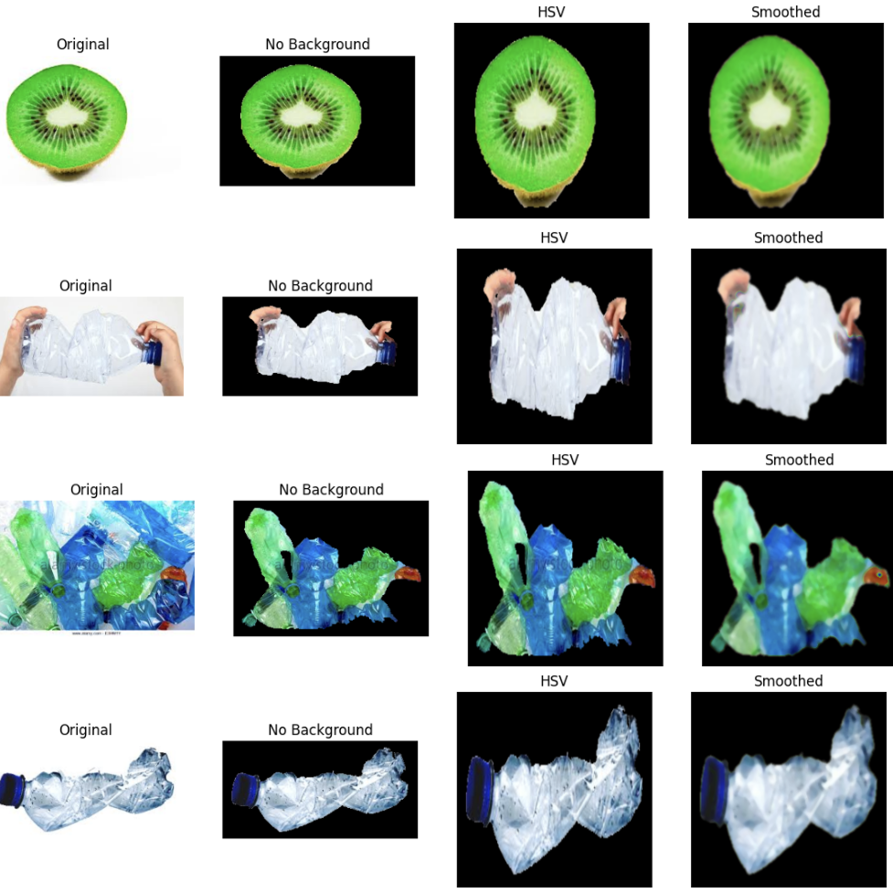
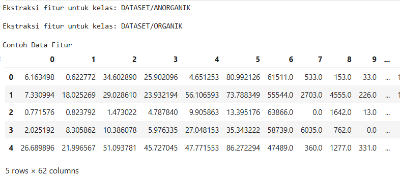

Smart Waste Classifier
(Organik vs Anorganik)
Image preprocessing, Feature Extraction
Vscode, Phyton
Nov 2025 - Des 2025
Project Description
Smart Waste Classifier is a final project for the Digital Image Processing and Computer Vision course. The project aims to classify waste images into two categories: organic and inorganic, by implementing a complete image processing and computer vision pipeline. The system emphasizes the application of preprocessing techniques and feature extraction methods to prepare image data before classification. The project demonstrates how raw image data can be transformed into meaningful representations that support effective computer vision tasks.
Image Preprocessing
Applies preprocessing techniques such as image resizing, color space conversion (RGB to HSV), noise reduction using Gaussian and median filters, and object segmentation to isolate the main object from the background.
Feature Extraction
Extracts meaningful features from preprocessed images, including color features (mean, standard deviation, HSV histogram), texture features using GLCM, and shape-based features such as area ratio, solidity, and circularity.
Classification Output
Displays classification results that categorize waste images into organic or inorganic classes based on the extracted features and trained classification model.

Process
Problem Identification
The project began by identifying challenges in waste classification, particularly the difficulty of manually separating organic and inorganic waste, which affects recycling efficiency and environmental cleanliness.
Preprocessing Design & Implementation
The main focus of the project was implementing image preprocessing techniques to improve image quality and object clarity. This stage involved resizing images, converting color spaces, reducing noise, and segmenting objects to ensure reliable feature extraction.
Feature Extraction Development
Feature extraction methods were designed and implemented to represent color, texture, and shape information from images. This phase focused on transforming visual data into numerical features suitable for classification.